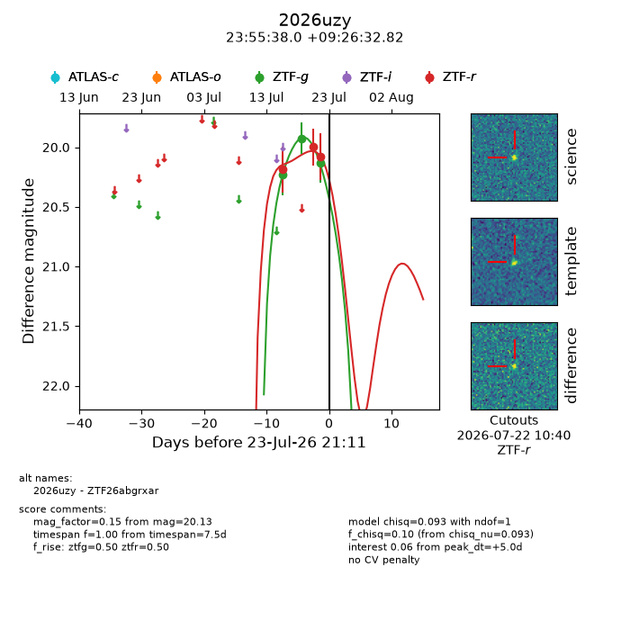
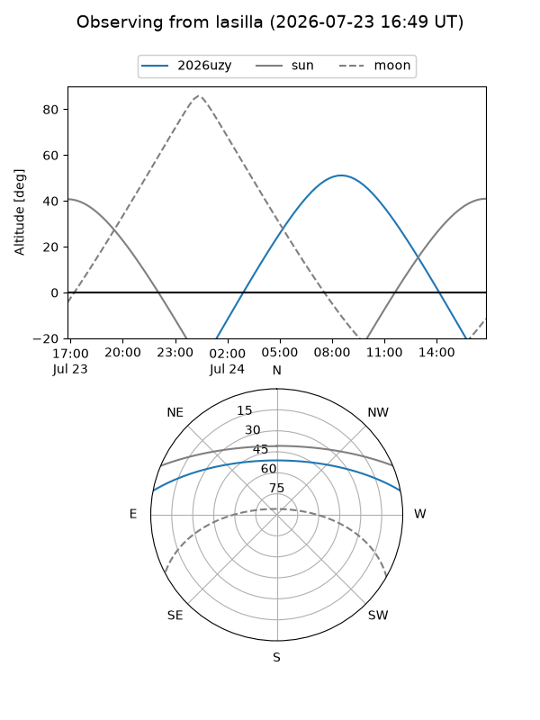
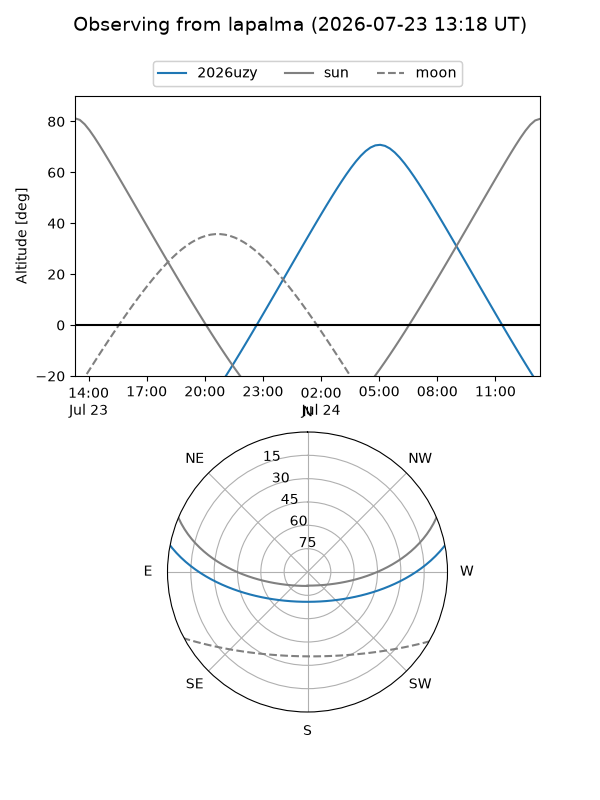
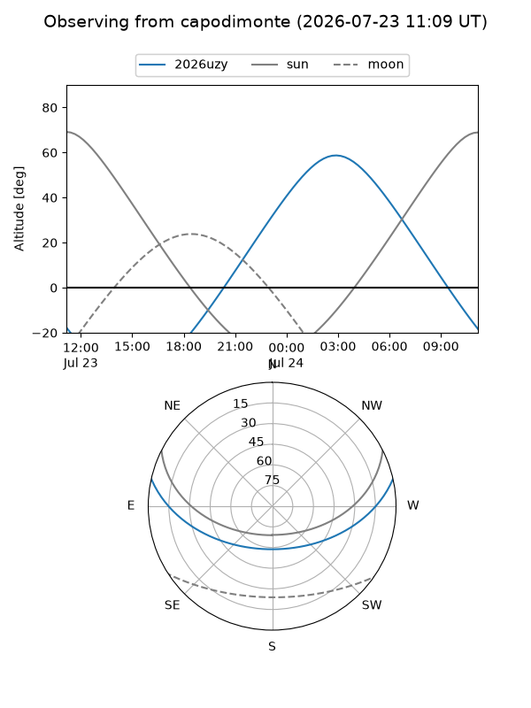
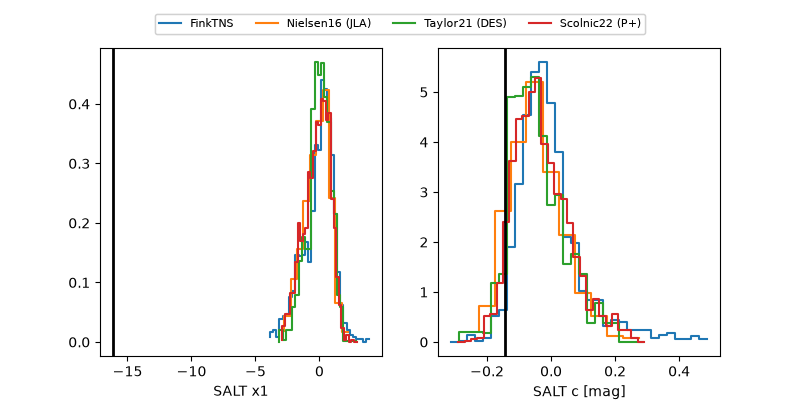

2026uzy
Target 2026uzy at 2026-07-23 21:14
Aliases and brokers:
FINK-ZTF: ztf.fink-portal.org/ZTF26abgrxar
Lasair-ZTF: lasair-ztf.lsst.ac.uk/objects/ZTF26abgrxar
ALeRCE-ZTF: alerce.online/object/ZTF26abgrxar
YSE-PZ: ziggy.ucolick.org/yse/transient_detail/2026uzy
TNS name: wis-tns.org/object/2026uzy
Direct TNS query: direct search
alt names
ZTF26abgrxar (ztf,fink_ztf)
2026uzy (tns,yse)
Coordinates:
equatorial (ra, dec) = 358.9081,+9.44245
equatorial (HMS+DMS) = 23:55:37.95,+09:26:32.82
galactic (l, b) = (100.7236,-51.00711)
Flags:
TNS type: nan
peak dt: +5.0
Photometry:
last ztfg=20.13, ztfr=20.08
3 ztfg, 3 ztfr detections
Lightcurve

Visibility



Additional plots
